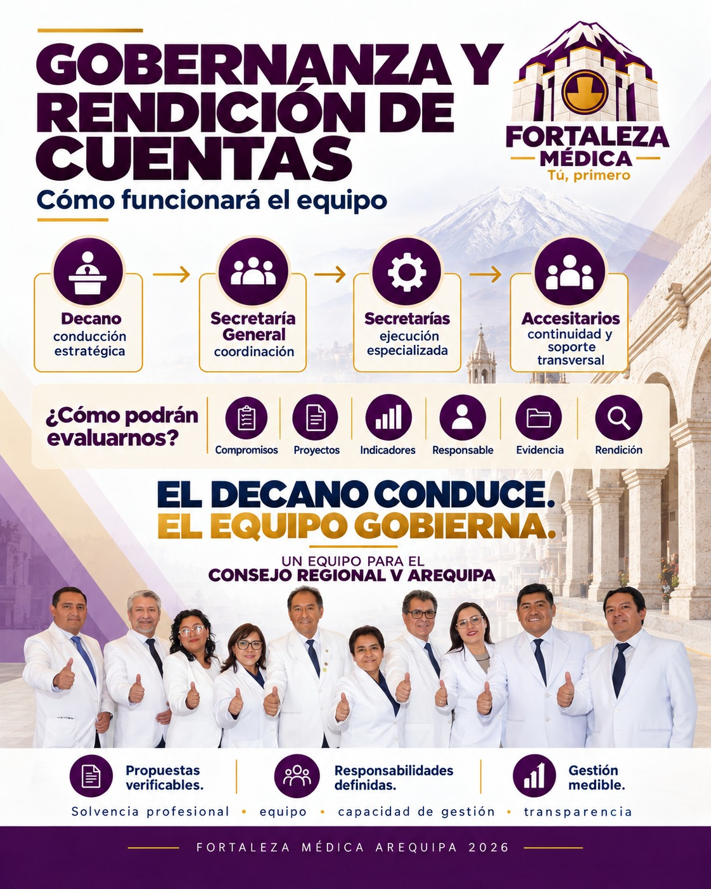
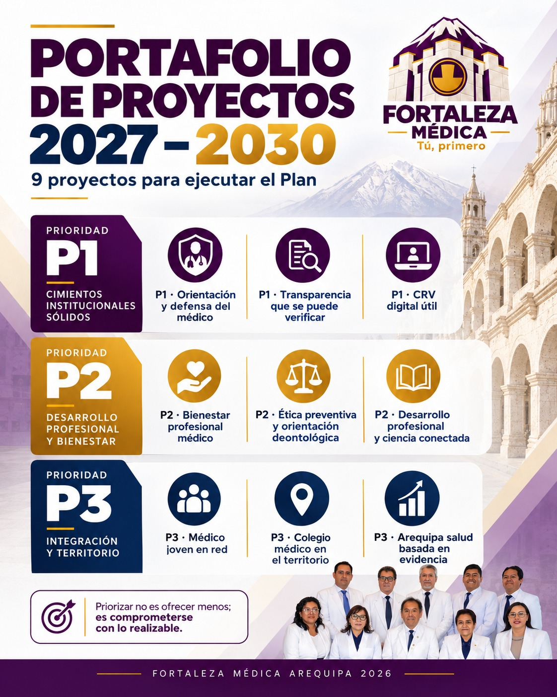
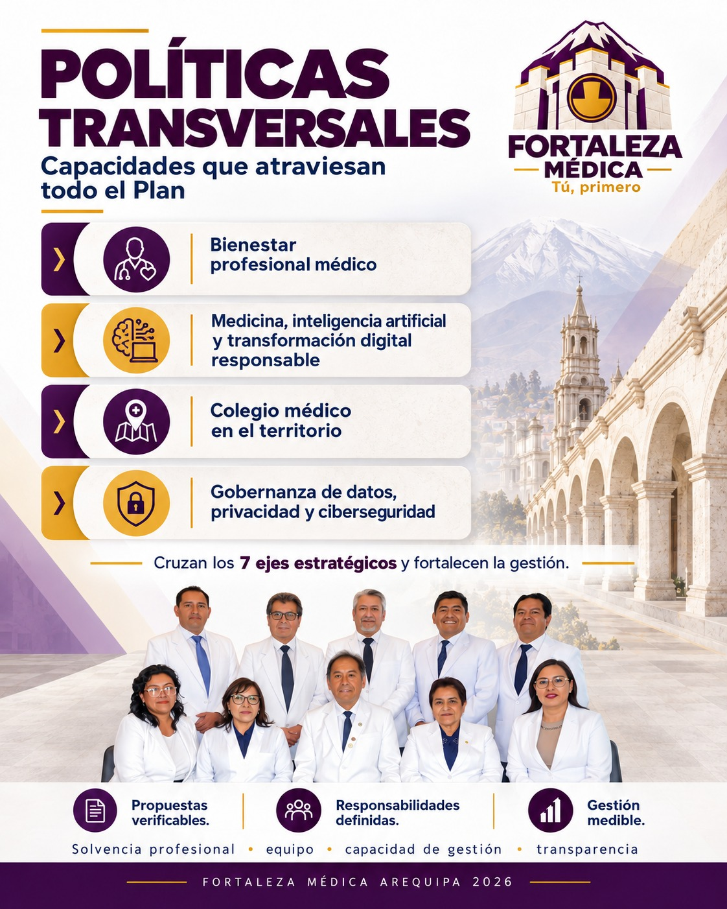
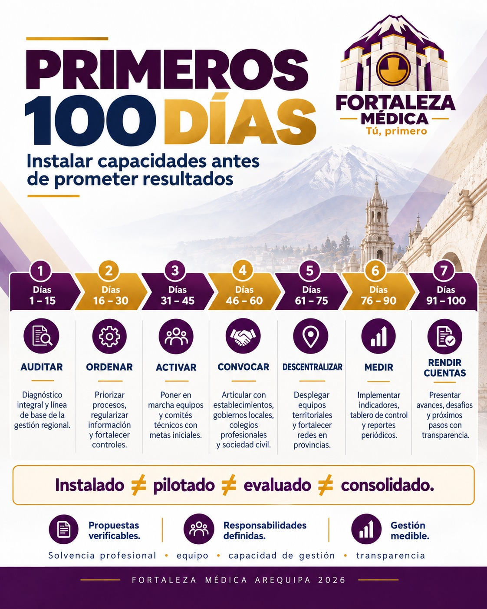
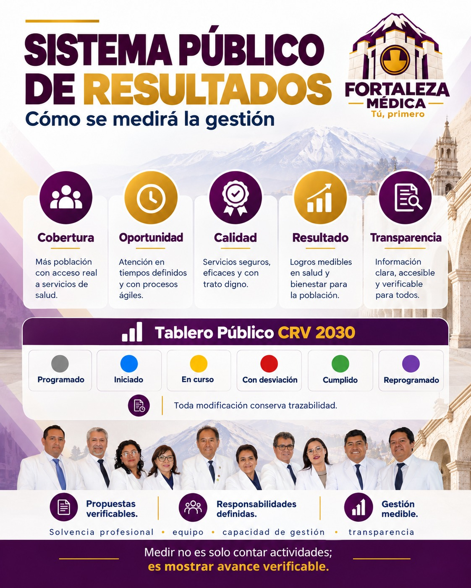

Eje 1
Defensa del ejercicio profesional
Fortalecer la defensa y representación del médico en el ejercicio de su profesión.
"TU PRIMERO"
Un Colegio Médico Fuerte, Transparente, Humano y al Servicio Verdadero del Colegiado en Arequipa.
Conoce primero al candidato y al equipo; luego revisa las propuestas por sector, el plan de gobierno y los 7 ejes programáticos.
Trayectoria, perfil y hoja de vida del candidato a Decano.
Ver perfil →Revisa las soluciones planteadas para los distintos ámbitos del ejercicio médico.
Ver propuestas →Una estructura integral para revisar las prioridades de gestión del Consejo Regional.
Ver los 7 ejes →Presidente / Decano Regional
Representamos un compromiso firme con el desarrollo profesional, la transparencia en la gestión de recursos y la defensa constante de la dignidad del médico arequipeño en todos los niveles de atención.
Experiencia comprobada para convertir los problemas del médico en decisiones e iniciativas concretas.
El bienestar del médico también es su dignidad profesional.
Espacios de soporte integral y atención frente al desgaste profesional y laboral.
Protección efectiva del médico en sus centros de guardia y establecimientos.
Acompañamiento jurídico oportuno ante eventualidades en el ejercicio profesional.
Capacitaciones continuas y preparación continua para la mejora del colegiado.
Defensa constante de la orden ante abusos administrativos y laborales.
Garantía de infraestructura y condiciones idóneas en el entorno asistencial.
Un equipo experimentado al servicio de la orden médica en Arequipa
Unidos por un Colegio Médico Fuerte, Transparente e Integrador en Arequipa.
Presidente / Decano Regional
CMP N° 22096
Ver Perfil / CVSecretario General
CMP N° 37542
Ver Perfil / CVSecretario de Ética y Deontología
CMP N° 53305
Ver Perfil / CVSecretario de Desarrollo Profesional y Científico
CMP N° 28102
Ver Perfil / CVSecretaria de Incidencia en Salud Pública
CMP N° 46822
Ver Perfil / CVSecretario de Asuntos Contenciosos y Administrativos
CMP N° 39972
Ver Perfil / CVSecretaria de Economía y Finanzas
CMP N° 49536
Ver Perfil / CVSecretaria del Médico Joven
CMP N° 72213
Ver Perfil / CVAccesitaria
CMP N° 46467
Ver Perfil / CVAccesitario
CMP N° 72185
Ver Perfil / CVLos contenidos existentes se organizan en cuatro niveles para facilitar su lectura y comparación transparente.
Defensa y representación profesional firme.
Desarrollo profesional y científico constante.
Planificación y decisiones verificables.
Incidencia y articulación con los colegiados.
Soluciones específicas diseñadas para las necesidades reales de cada ámbito laboral
Conoce las láminas del plan estratégico de FORTALEZA MÉDICA para el Consejo Regional V Arequipa.
Propuestas verificables · Responsabilidades definidas · Gestión medible
Las imágenes siguientes reproducen las láminas del material compartido. Selecciona una para verla en tamaño completo.

Lámina 2Coloca foto-02.jpeg en la carpeta plan-estrategico
Lámina 3Coloca foto-03.jpeg en la carpeta plan-estrategico
Lámina 4Coloca foto-04.jpeg en la carpeta plan-estrategico
Lámina 5Coloca foto-05.jpeg en la carpeta plan-estrategico
Lámina 6Coloca foto-06.jpeg en la carpeta plan-estrategicoPrioridades para el Colegio Médico del Perú — Consejo Regional V Arequipa.
Fortalecer la defensa y representación del médico en el ejercicio de su profesión.
Promover la ética médica, la deontología y la confianza en la institución colegiada.
Impulsar el desarrollo profesional y el avance de la ciencia y la innovación médica.
Promover la participación técnica del Colegio Médico en los asuntos de salud pública regional.
Orientar la gestión institucional hacia la transparencia económica y la rendición de cuentas.
Dar espacio al médico joven y fomentar la renovación y participación generacional.
Impulsar la modernización de los servicios y procesos del Colegio Médico.
"TU PRIMERO"
Por una gestión transparente, humana y verdaderamente representativa en Arequipa.
Registra tu apoyo a FORTALEZA MÉDICA para el Consejo Regional V Arequipa
Un espacio para consultar y compartir libros, documentos y material de lectura en formato PDF.
Selecciona un libro para leerlo en línea o descargarlo.
Próximamente, nuevos materiales de lectura
Los libros PDF que se agreguen a la biblioteca aparecerán aquí.
libros del repositorio y agrega cada archivo al listado librosDisponibles del código. En una web estática de GitHub/Vercel, un formulario del navegador no puede guardar archivos directamente en el servidor; los archivos deben incorporarse al repositorio o conectarse a un servicio de almacenamiento.